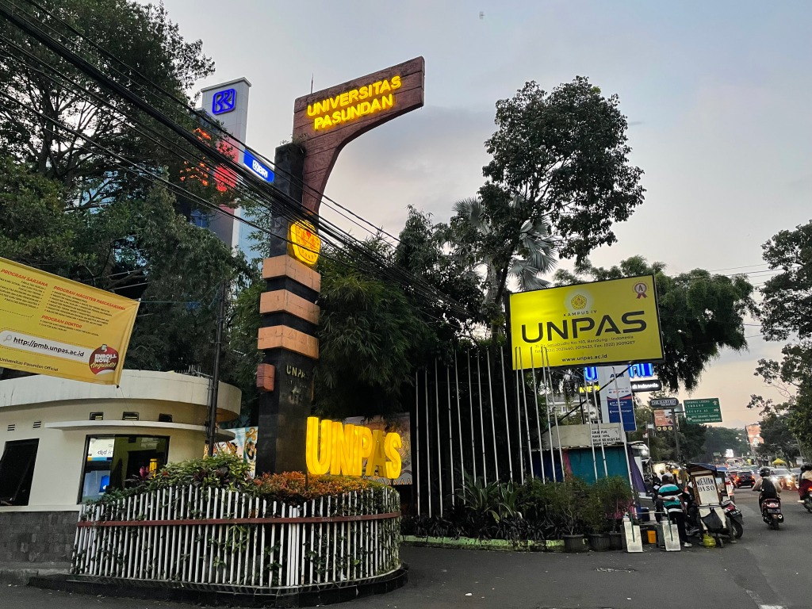
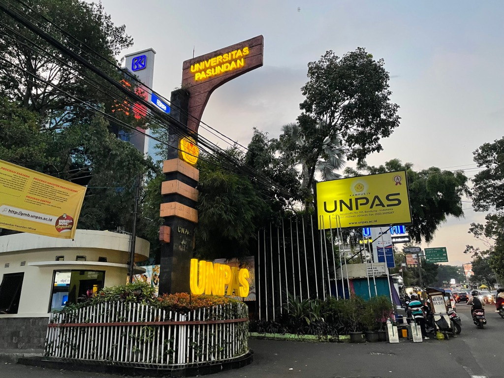

Self
di tulis oleh Alisha nur salampessy. pada 02 november 2024.
Hallo! nama saya Alisha nur salampessy atau bisa dipanggil chaca.Saya ingin memperkenalkan diri dan berbagi sedikit tentang latar belakang, minat, dan tujuan hidup saya. Semoga dengan ini, kalian dapat mengenal saya lebih baik. Saya lahir di Sumedang pada tanggal 02 oktober 2006. Saya anak pertama dari tiga bersaudara. Papa saya asli orang Ambon dan mama saya asli orang sumedang. Saya dan adik- adik memiliki marga yang sangat kuat dari papa saya yaitu "salampessy". Berhubung papa saya di dinaskan disumedang saya dan keluarga menetap disumedang sudah hampir 18 tahun. Saya tinggal di daerah Cimalaka untuk melajutkan sekolah dari TK,SD tapi SMP & SMA saya pindah ke sumedang karena papa saya ditugaskan kembali tempat lahirnya yaitu Ambon. Sejak kecil, saya sudah tertarik dengan jiwa sosialisasi tentang kesehatan. Keluarga saya sangat mendukung minat saya, dan mereka selalu mendorong saya untuk mengeksplorasi hal-hal baru. Tetapi sesudah saya beranjak dewasa orang tua saya memutuskan saya untuk masuk ke dalam dunia IT. Karena orang tua saya memiliki tujuan agar anaknya memiliki prospek kerja yang luas diera moderen seperti sekarang ini.Alhasil saya mengubur cita - cita yang sudah saya impikan sejak kecil, it's okay. Dan saya memilih melanjutkan pendidikan di Universitas Pasundan dengan jurusan Teknik informatika dan merasa beruntung memiliki pengalaman yang berharga selama masa studi ini.
 
